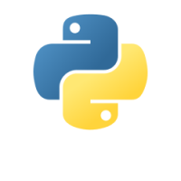

<!doctype html>
<html lang="en">
    <head>
        <meta charset="utf-8">
        <meta name="viewport" content="width=device-width, initial-scale=1.0, maximum-scale=1.0, user-scalable=no">

        <title>Manual de Python</title>
        <link rel="stylesheet" href="./css/reveal.css">
        <link rel="stylesheet" href="./css/theme/black.css" id="theme">
        <link rel="stylesheet" href="./css/highlight/monokai.css">
        <link rel="stylesheet" href="./css/print/paper.css" type="text/css" media="print">
          <link rel="stylesheet" href="./_assets/custom.css">


    </head>
    <body>

        <div class="reveal">
            <div class="slides"><section  data-markdown><script type="text/template">

# Manual de introducción a Python

Autor [Alfredo Sánchez Alberca](http://aprendeconalf.es)


</script></section><section  data-markdown><script type="text/template">
## ¿Qué es Python?

[Python](https://www.python.org/) es un lenguaje de programación de alto nivel multiparadigma que permite:
- Programación imperativa
- Programación funcional
- Programación orientada a objetos

Fue creado por Guido van Rossum en 1990 aunque actualmente es desarrollado y mantenido por la [Python Software Foundation](https://www.python.org/psf-landing/)
</script></section><section  data-markdown><script type="text/template">
## Principales ventajas de Python

- Es de código abierto (certificado por la OSI).
- Es interpretable y compilable.
- Es fácil de aprender gracias a que su sintaxis es bastante legible para los humanos.
- Es un lenguaje maduro (29 años).
- Es fácilmente extensible e integrable en otros lenguajes (C, java).
- Esta mantenido por una gran comunidad de desarrolladores y hay multitud de recursos para su aprendizaje.
</script></section><section ><section data-markdown><script type="text/template">
## Tipos de ejecución

### Interpretado en la consola de Python

Se ejecuta cada instrucción que introduce el usuario de manera interactiva.

```sh
> python
>>> name = "Alf"
>>> print("Hola " + name)
Hola Alf
```
</script></section><section data-markdown><script type="text/template">
### Interpretado en fichero

Se leen y se ejecutan una a una todas las instrucciones del fichero.

```python
# Fichero hola.py
name = "Alf"
print("Hola " + name)
```

```sh
> python hola.py
Hola Alf
```

También se puede hacer el fichero ejecutable indicando en la primera línea la ruta hasta el intérprete de Python.

```{python}
#!/usr/bin/python3
name = "Alf"
print("Hola " + name)
```

```sh
> chmod +x hola.py
> ./hola.py
Hola Alf
```
</script></section><section data-markdown><script type="text/template">
### Compilado a bytecode

```python
# Fichero hola.py
name = "Alf"
print("Hola " + name)
```

```sh
> python -O -m py_compile hola.py
> python __pycache__/hola.cpython-37.pyc
Hola Alf
```

### Compilado a ejecutable del sistema

Hay distintos paquetes que permiten compilar a un ejecutable del sistema operativo usado, por ejemplo `pyinstaller`.

```sh
> conda install pyinstaller
> pyinstaller hola.py
> ./dist/hola/hola
Hola Alf
```
</script></section></section><section ><section data-markdown><script type="text/template">
## Tipos de datos primitivos simples

- **Números** (numbers): Cadenas de dígitos (pueden incluir el - para negativos y el . para decimales) que representan números.  
**Ejemplo**. 0, -1, 3.1415.
- **Cadenas** (strings): Cadenas de caracteres alfanuméricos que representan texto. Se representan entre comillas simples o dobles.  
**Ejemplo**. 'Hola', "Adiós".
- **Booleanos** (boolean): Contiene únicamente dos elementos que representan los valores lógicos `True` (veradero) y `False` (falso).
</script></section><section data-markdown><script type="text/template">
## Tipos de datos primitivos compuestos

- **Listas** (lists): Listas de objetos que representan secuencias ordenadas de objetos de distintos tipos. Se representan con corchetes y los elementos se separan por comas.  
**Ejemplo**. [1, "dos", [3, 4], True].
- **Diccionarios** (dictionaries): Colección de objetos con una clave asociada. Se representan con llaves, los pares separados por comas y cada par contiene una clave y un objeto asociado separados por dos puntos.  
**Ejemplo**. {'pi':3.1416, 'e':2.718}.
- **Tuplas** (tuples). Representan secuencias ordenadas de objetos de distintos tipos. A diferencia de las listas son inmutables, es decir, que no cambian durante la ejecución. Se representan mediante paréntesis y los elementos se separan por comas.  
**Ejemplo**. (1, 'dos', 3)
</script></section></section><section  data-markdown><script type="text/template">
## Números (clases `int` y `float`)

Pueden ser enteros (`int`) o reales (`float`).

```python
>>> type(1)
<class 'int'>
>>> type(2.3)
<class 'float'>
```

- Operadores aritméticos: `+` (suma), `-` (resta), `*` (producto), `/` (cociente), `//` (cociente división entera), `%` (resto división entera).
- Operadores lógicos: `==` (igual que), `>` (mayor que), `<` (menor que), `>=` (mayor o igual que), `<=` (menor o igual que), `!=` (distinto de).

```python
>>> 2+3
5
>>> 5*2
10
>>> 5/2
2.5
>>> 5//2
2
>>> 3==3
True
>>> 4<=3
False
```
</script></section><section  data-markdown><script type="text/template">
## Cadenas (clase `str`)

Se representan entre comillas sencillas ' o dobles ".

- Operadores de cadenas: `s[i]` (carácter i+1-ésimo), `s[i:j]` (subcadena de la posición i+1 a la j), `+` (concatenación), `*` (copias concatenadas), `in` pertenencia, `not in` no pertenencia.
- Operadores lógicos:  `==` (igual que), `>` (sucede), `<` (antecede), `>=` (sucede o igual que), `<=` (antecede o igual que), `!=` (distinto de). Utilizan el orden establecido en el código ASCII.
- Funciones: `len` (longitud de la cadena), `min` (carácter menor), `max` (carácter mayor).

```python
>>> 'Python'[1]
'y'
>>> 'Me gusta ' + 'Python'
'Me gusta Python'
>>> 'Python' * 3 
'PythonPythonPython'
>>> 'Python' < 'python'
True
>>> len('Python')
6
```
</script></section><section  data-markdown><script type="text/template">
## Referencias

- [Python](https://www.python.org/) Sitio web de Python.
- </script></section></div>
        </div>

        <script src="./lib/js/head.min.js"></script>
        <script src="./js/reveal.js"></script>

        <script>
            function extend() {
              var target = {};
              for (var i = 0; i < arguments.length; i++) {
                var source = arguments[i];
                for (var key in source) {
                  if (source.hasOwnProperty(key)) {
                    target[key] = source[key];
                  }
                }
              }
              return target;
            }

            // Optional libraries used to extend on reveal.js
            var deps = [
              { src: './lib/js/classList.js', condition: function() { return !document.body.classList; } },
              { src: './plugin/markdown/marked.js', condition: function() { return !!document.querySelector('[data-markdown]'); } },
              { src: './plugin/markdown/markdown.js', condition: function() { return !!document.querySelector('[data-markdown]'); } },
              { src: './plugin/highlight/highlight.js', async: true, callback: function() { hljs.initHighlightingOnLoad(); } },
              { src: './plugin/zoom-js/zoom.js', async: true },
              { src: './plugin/notes/notes.js', async: true },
              { src: './plugin/math/math.js', async: true },
              { src: './plugin/menu/menu.js', async: true }
            ];

            // default options to init reveal.js
            var defaultOptions = {
              controls: true,
              progress: true,
              history: true,
              center: true,
              transition: 'default', // none/fade/slide/convex/concave/zoom
              dependencies: deps
            };

            // options from URL query string
            var queryOptions = Reveal.getQueryHash() || {};

            var options = {"transition":"convex","center":true};
            options = extend(defaultOptions, options, queryOptions);
        </script>


        <script>
          Reveal.initialize(options);
        </script>
    </body>
</html>
